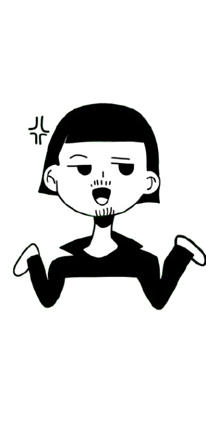
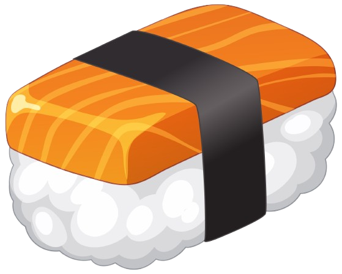
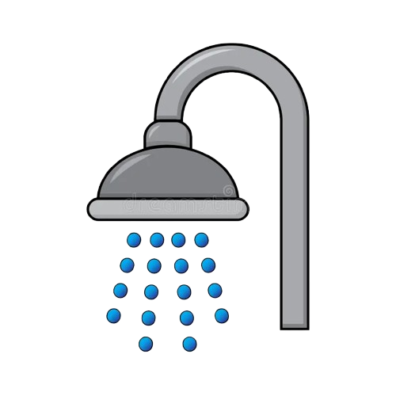

Sushi

Banho
💬 Fale com
o Takematsu
➤
Menu de Acessibilidade
Aumentar Fonte
Diminuir Fonte
Esconder Imagens
Cor do Texto
Baixa Saturação
Alta Saturação
Mais Espaçamento
Menos Espaçamento
Cor do Fundo
Fechar